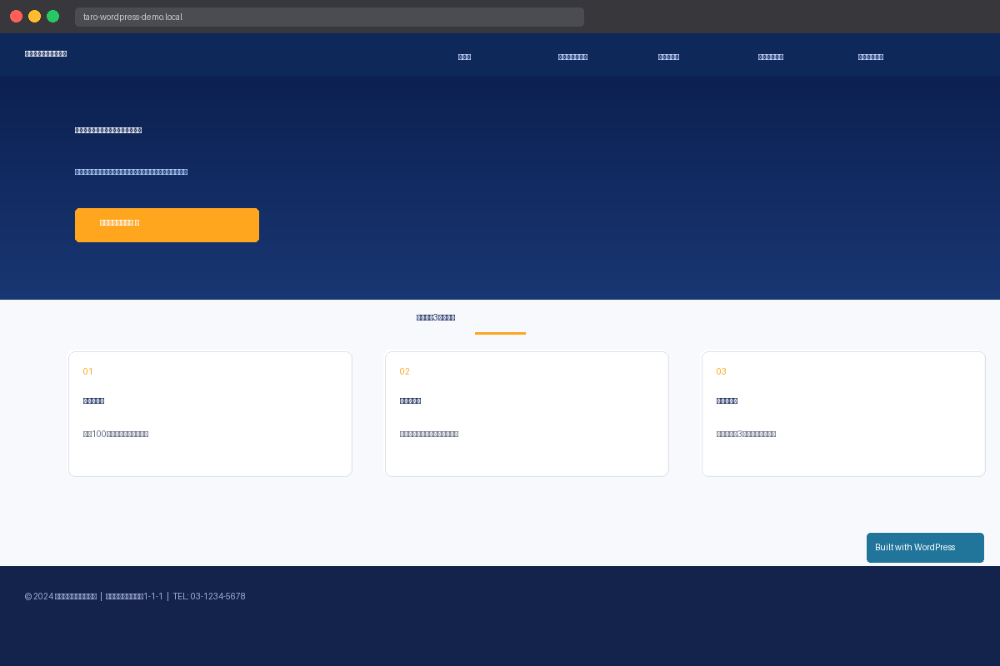

制作概要
中小企業・個人事業主向けの税理士事務所サイトを想定したWordPressデモサイトです。Lightningテーマのカスタマイザー機能を活用し、ヒーロースライダー・固定ページ・お問い合わせフォームを実装しました。
「士業のお客様に提案できるWordPress制作の実力を示す」ことを目的として制作しています。
サイト仕様
| サイト名 | 山田太郎税理士事務所 |
|---|---|
| CMS | WordPress（Local by Flywheel でローカル構築） |
| テーマ | Lightning（VK Themes） |
| プラグイン | Contact Form 7 |
| ページ数 | 5ページ（ホーム・サービス・料金・事務所概要・FAQ・お問い合わせ） |
| 制作環境 | Local by Flywheel（Windows） |
使用技術・スキル
実装ポイント
🖼️
ヒーロースライダーのカスタマイズ
Lightningカスタマイザーで2枚のスライドを設定。日本語タイトル・説明文・CTAボタンを配置し、オーバーレイカラーで視認性を確保しました。
📋
5ページ構成のコンテンツ設計
サービス・料金（プラン比較表）、事務所概要（代表挨拶・アクセス）、FAQ（5項目）など、士業サイトに必要な情報を網羅しました。
📬
Contact Form 7 導入
お問い合わせページにContact Form 7を設置。氏名・メール・電話・相談内容の4フィールドで必要最低限の問い合わせ導線を実装しました。
⚙️
WP REST API によるコンテンツ一括更新
全ページのコンテンツをWP REST API（wp.apiFetch）で効率的に更新。管理画面UIを使わず一括でHTMLコンテンツを適用しました。
制作の背景・目的
フリーランスとして士業（税理士・司法書士・社労士など）のお客様に対してWordPressサイト制作を提案できることを示すためのデモサンプルです。
Lightningテーマは国内での利用実績が多く、士業・医療・サービス業など幅広い業種で採用されています。このサンプルでは「信頼感」と「わかりやすさ」を重視したデザインを意識して制作しました。
⚠️ このサイトはLocal by Flywheelを使ったローカル環境のWordPressデモです。公開URLはありませんが、ご要望があれば実際の環境でのデモをご案内できます。
← ポートフォリオに戻る